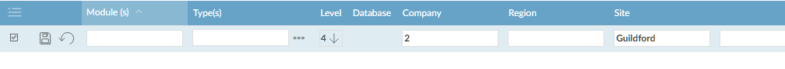
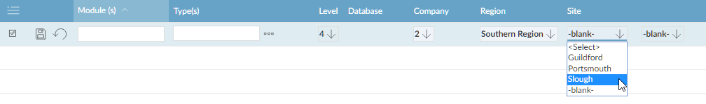

User views allow different users to see different lists of companies and projects. For example,
Views relate to an organ
The names for the different levels (operating company, region, office in the example above) will depend on the way your system has been set up. You can have up to five levels. The top level view shows the entire database; the lowest view might be the site level. A view is based on a combination of the level and the entity at that level. For example, one view might be "Level 3 - Southern Region" and another view might be "Level 4 - Slough Office".
A user's view is the lowest level at which they are able to view the database. The user can always change their view to see the views at higher levels (for example a user whose view is "Level 4 - Slough Office" will be able to change their view to see the companies and projects that are visible in "Level 3 - Southern Region". They can add companies and projects from higher levels to their view.
In general, all users with the same view will see the same data. So if users Smith and Jones both have the Slough office view, and Smith adds a company to the view, Jones will also see that company. However, an individual user's view can be restricted to only see companies of certain types; for example, user Thomas may only need to see the
Note that you can only set up one view within any "

If you are using "status by view" (that is, SRM/STATVIEW is set to a level) you have to select the entities at each intervening level.

Use Company Types to set up a list of company types and the "module" codes they belong to (as used by Maintain User Views).
If you are using the